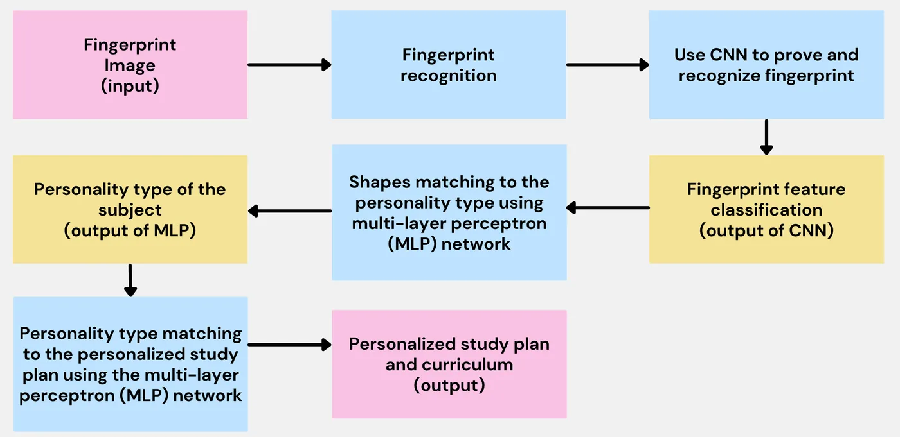
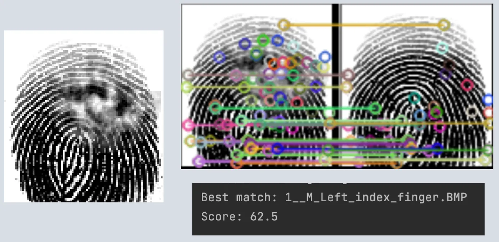

Overview
FluentX is a concept for an English test-prep tuition centre (TOEFL, IELTS and Cambridge exams). Our five-person team redesigned the business around technology and proposed an AI system that uses a fingerprint scan for security, attendance and personalised study plans. It won Best Business Idea at NTU's AI and Entrepreneurship Programme.
- Mapped the business before and after the change across 8 building blocks, from partners to revenue.
- Proposed a two-step AI pipeline: an image-recognition model reads the fingerprint, then a second model turns the result into a study plan.
- Showed how one scan could cover three day-to-day jobs: access control, attendance and class placement.
The problem
A traditional test-prep centre runs on offline classes, tutors and study materials. Its contact with families is limited, mostly fee questions and last-minute cancellations. That makes it hard to personalise teaching, track progress or reach students beyond the classroom.
My role
I was one of five team members. With my teammates, I analysed the existing business model and co-developed the before-and-after Business Model Canvas, working out how each part of the business would change once AI, VR/AR and a mobile app were added.
Approach
- 1. Mapped the current business. We laid out a “before” Business Model Canvas, a one-page map of partners, activities, resources, channels, customer relationships, value, costs and revenue.
- 2. Redesigned each block. For example, partners grew from tutors and parents to schools, universities, publishers, investors and web developers. The target age range widened from 10–18 to 3–21.
- 3. Compared biometric options. We compared fingerprint, face, hand, iris and voice recognition. Fingerprints rated high on distinctiveness, permanence and performance, so we chose them.
- 4. Explored fingerprint matching. We walked through a recognition pipeline on a dataset of 6,000 fingerprint images from 600 people: cleaning and augmenting the images (rotations, shifts, flips, crops), matching key features, and scoring the best match. We also studied a published 15-layer CNN (convolutional neural network, a standard model for recognising images) for classifying fingerprints.
- 5. Proposed the AI pipeline. The CNN classifies the fingerprint. An MLP (multi-layer perceptron, a simple neural network) then maps it to a learning profile, and a second MLP maps that profile to a personalised study plan. The profile step uses DMIT, a fingerprint-based test that claims to identify learning styles. We mocked up an example student profile and a first-week IELTS study plan.
Results and impact
- 6 major changes to the business: online as well as offline classes, games and VR in lessons, a web app for parents and tutors, partnerships with companies and content providers, seminars in schools and universities, and sponsorship from authors and companies.
- 3 uses for one fingerprint scan: access control for different areas of the centre, real-time attendance logs for staff and students, and sorting students into classes by learning profile.
- 2 new revenue streams: licensing the centre's digital materials to other schools, and targeted ads on the online platform and app.
Key takeaways
- Adding technology changes the whole business, not just one part. Costs move towards AI platforms, VR/AR equipment and cloud storage, and new ways to earn money open up.
- Choosing a sensor is a trade-off. Fingerprints offered the best balance of accuracy, stability over time and practicality among the five options we compared.
- One data point can serve several operational needs. A single scan supports security, attendance tracking and class planning.
Gallery

